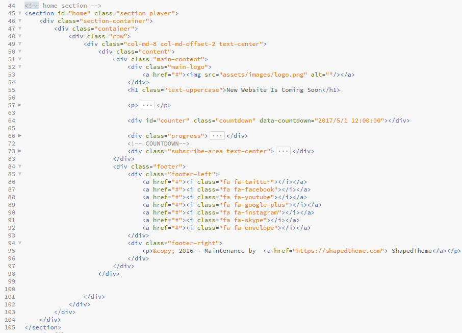

Created: 12/04/2016
Updated: 12/04/2016
By: ShapedTheme
Thank you for purchasing this Template. If you have any question that are beyond the scope of this help file, please feel free to question form here. Thanks so much!
The template is made with responsive layout with Bootstrap framework. All the content is within section. All the part of the template is divided with section. Main infrastructure is same into the all section. All contents are rounded with div, id and class. Most of the class and id are used according to Bootstrap. Here is the general structure.
I am using one CSS file for the template. In the general section of css file I used the codes to reset the generic style of the html. All required styles are included in this file with well commented. According to the comment you can customize the template easily.
/* === General === */ /* === Home === */ /* === Social Icons === */ /* === Service === */ /* === About === */ /* === Contact === */ /* === Footer === */ /* === Responsive === */
If you would like to edit a specific section of the site, simply find the appropriate label in the CSS file, and then scroll down until you find the appropriate style that needs to be edited.
This theme imports three Javascript files.
----- Countdown ----- "January 26, 2016 20:39:00"
----- Backstretch Slider ----- "images/slider1.jpg" , "images/slider2.jpg" , "images/slider3.jpg"
----- Youtube Video ----- videoURL:'https://youtube.com/watch?v=fpViZkhpPHk'
----- Ajax mailchimp ----- url: http://xxx.xxx.list-manage.com/subscribe/post?u=xxx&id=xxx
I've used the following images, icons or other files as listed.
Once again, thank you so much for purchasing this theme. As I said at the beginning, I'd be glad to help you if you have any questions relating to this theme.
ShapedTheme